LINE公式アカウントを開設する方法

※2020年11月現在、LINE公式アカウントをスマホから開設できるようになりました！ 詳細はこちらへ
❶まずはPCから「LINE for Businesss」と検索し、「LINE for Business公式サイト」を開きます。右上の「アカウントの開設（無料）」をクリックします。
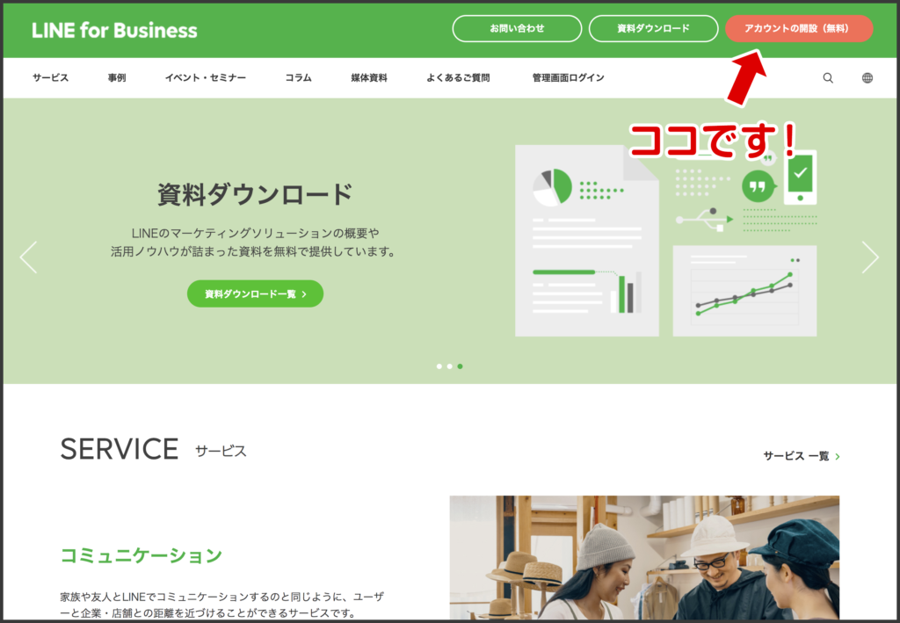
❷アカウントの開設ページが表示されます。矢印のついている「LINE公式アカウント開設（無料）」をクリックしてください。
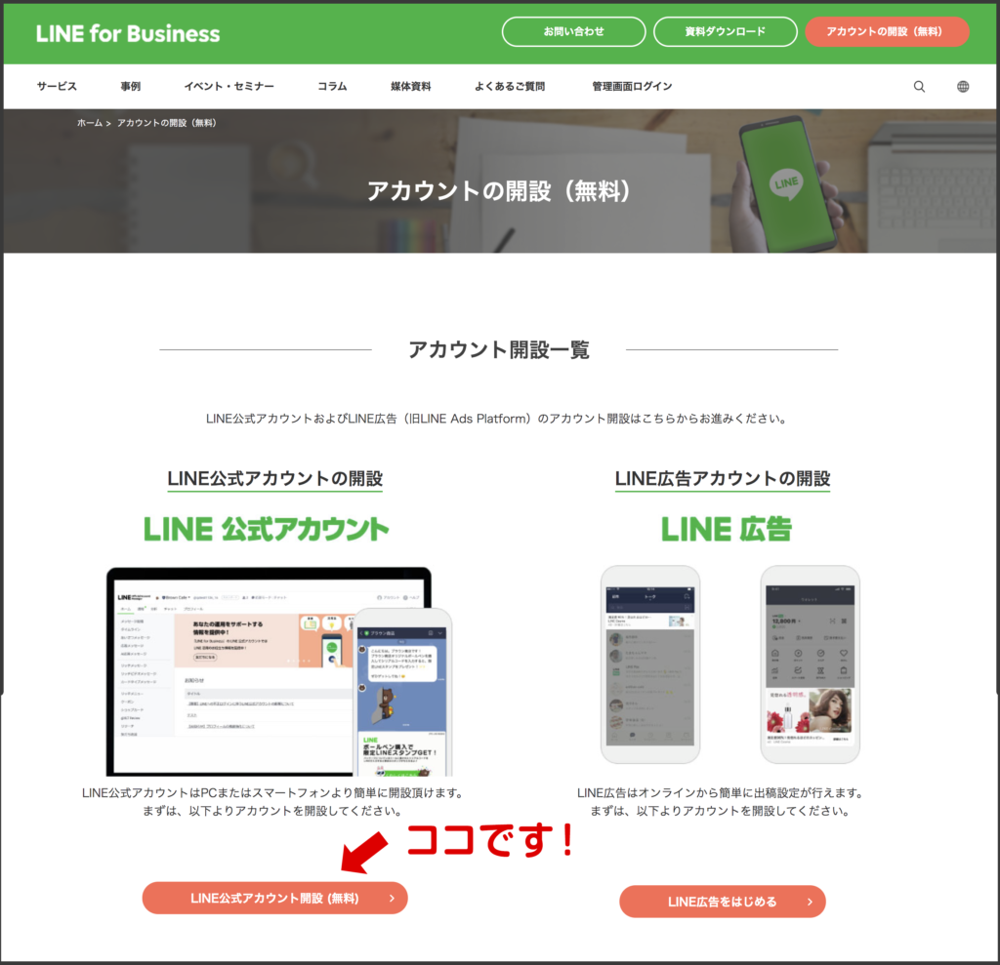
❸いよいよLINE公式アカウントを開設します！
公式アカウントには2種類ありますので、下に表示されている「未認証アカウントを開設する」というボタンをクリックしてください。
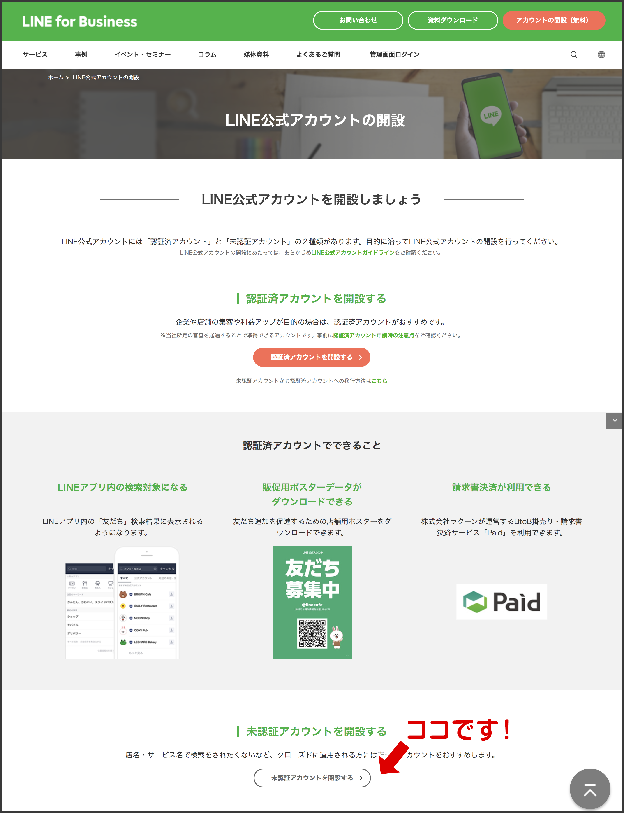
❹すると、LINE Business IDというタイトルのページが開きますので、上の「LINEアカウントでログイン」をクリックしてください。（ご自分のプライベートで使われているアカウントと紐付けするためです）
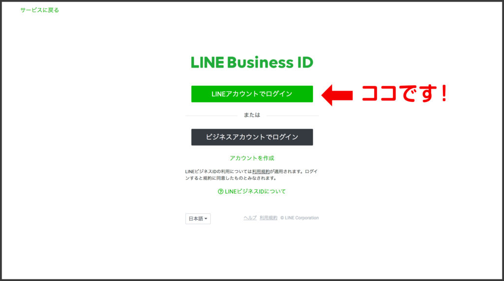
❺ご自分のLINEアカウントで登録したメールアドレスとパスワードを入力してログインしてください。
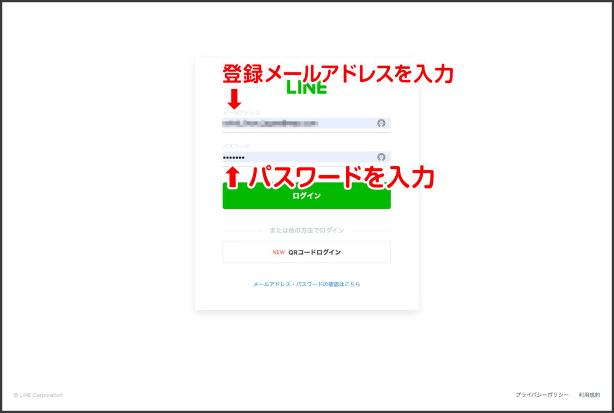
※メールアドレスやパスワードを忘れてしまった場合は、再設定するか、ログインボタンの下の「QRコードでログイン」をクリックしてログインする方法もあります。
QRコードが表示されたら、スマホのLINE QRコードリーダーをかざして認証番号を取得し（スマホに“ご本人確認”が表示されるので、その番号を入力します）ログインしてください。
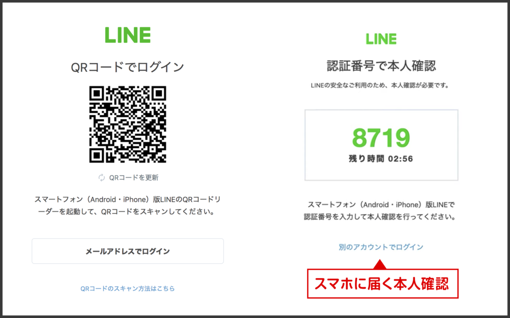
❻「LINE公式アカウントの取得」ページが開きますので、新たに作るアカウント名やメールアドレス、業種を入力してグリーンの「完了する」ボタンをクリックします。
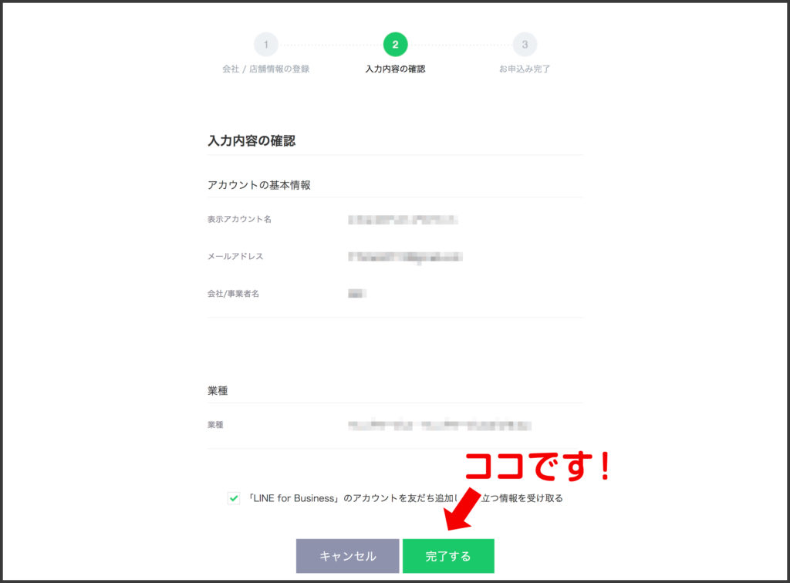
❼「LINE公式アカウントが作成されました」というページが表示されます。下の「LINE Official Acound Managerへ」ボタンをクリックし、同意文書に同意します。
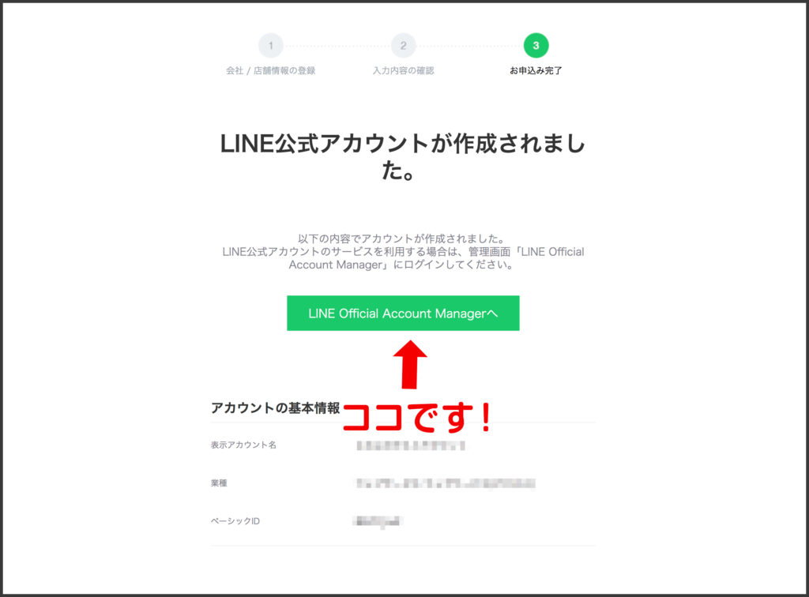
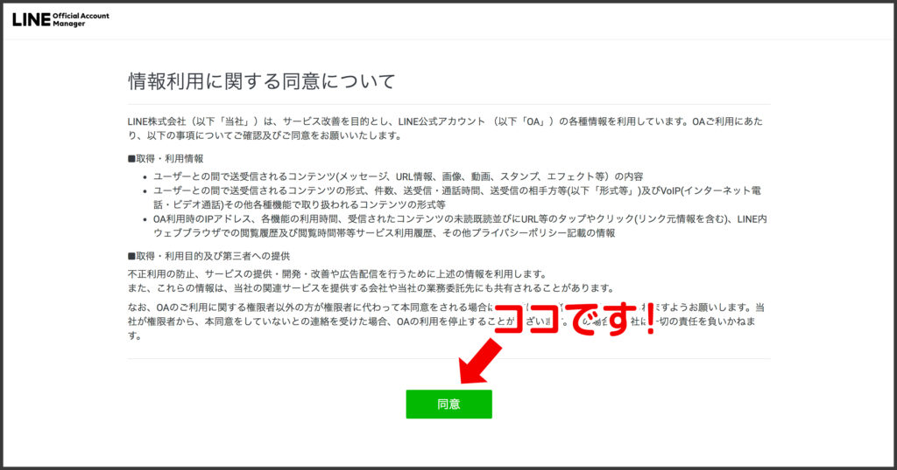
❽チュートリアルでLINE公式アカウントの機能などについて紹介してくれます♪ 不要な方はスルーしてOK！
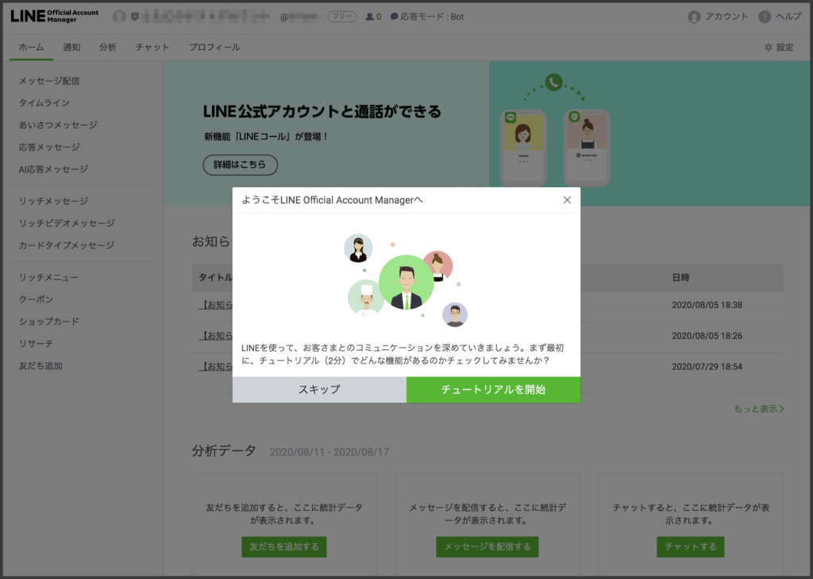
❾ユーザー画面
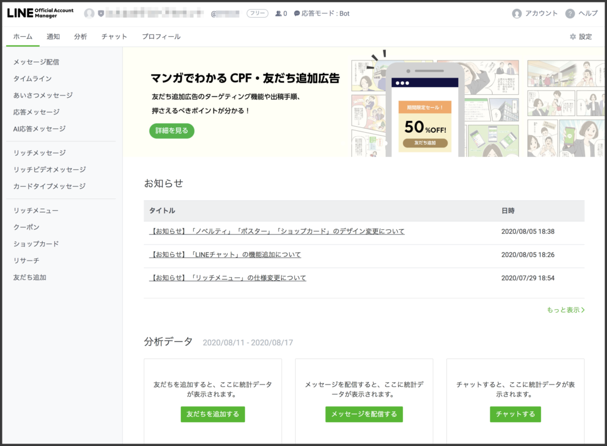
これでアカウント開設は完了です！
よろしければこのままこのページ下の『LINEに友だち追加』ボタンをタップしていただき、matsumotoを友だちに追加してください。また、開設した公式アカウントをどのように運営するか、今後ブログでコツを解説していきますので、ぜひご覧ください！
●LILNE公式アカウントをオススメする理由はこちら
●LINE公式アカウントで何ができるのかは、こちら
●さらにLステップでLINE公式を10倍活用する方法はこちら